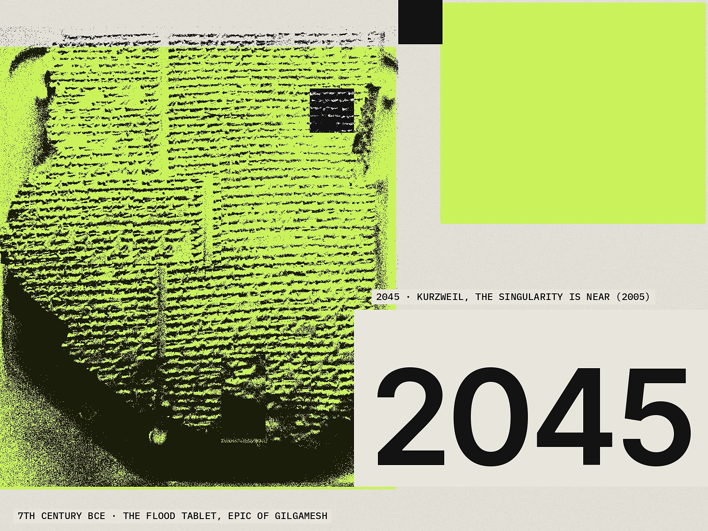
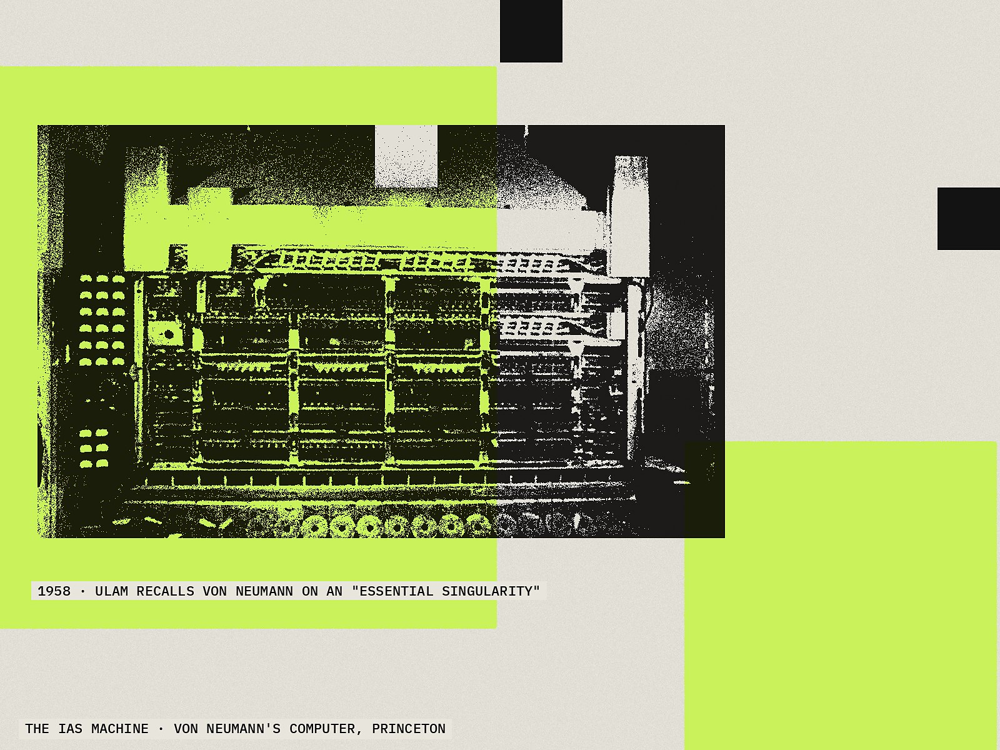
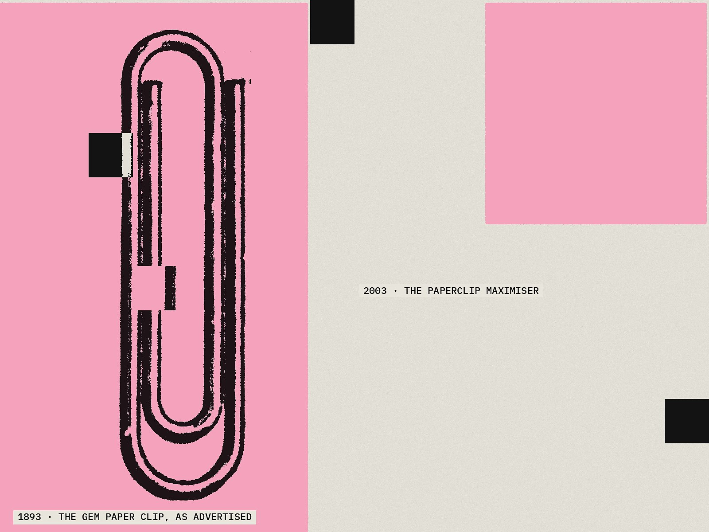
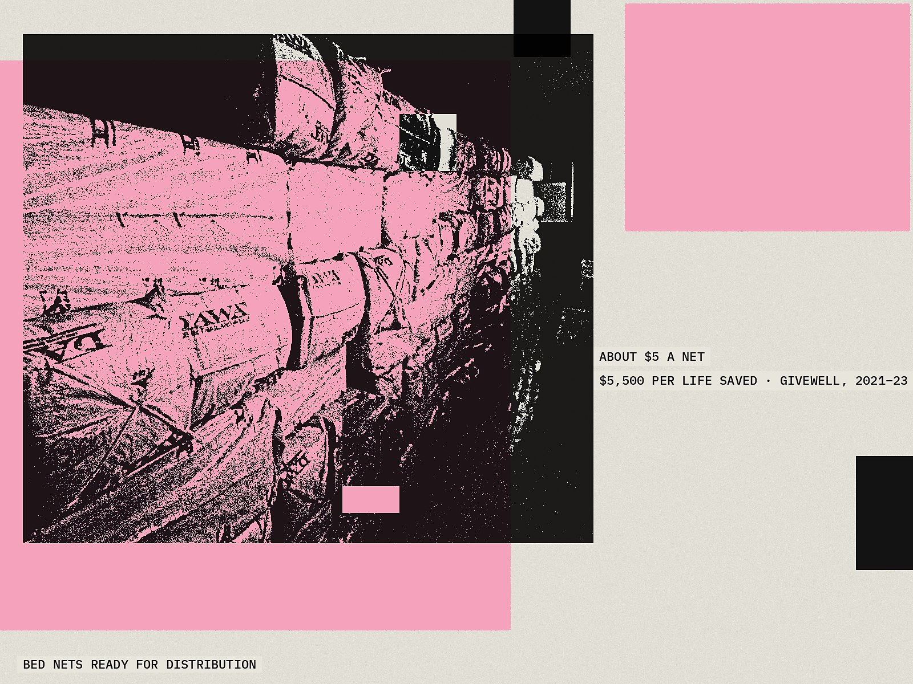
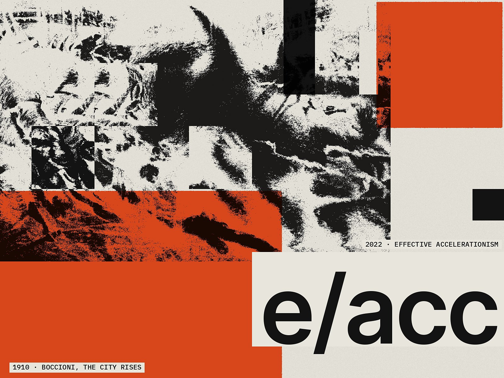
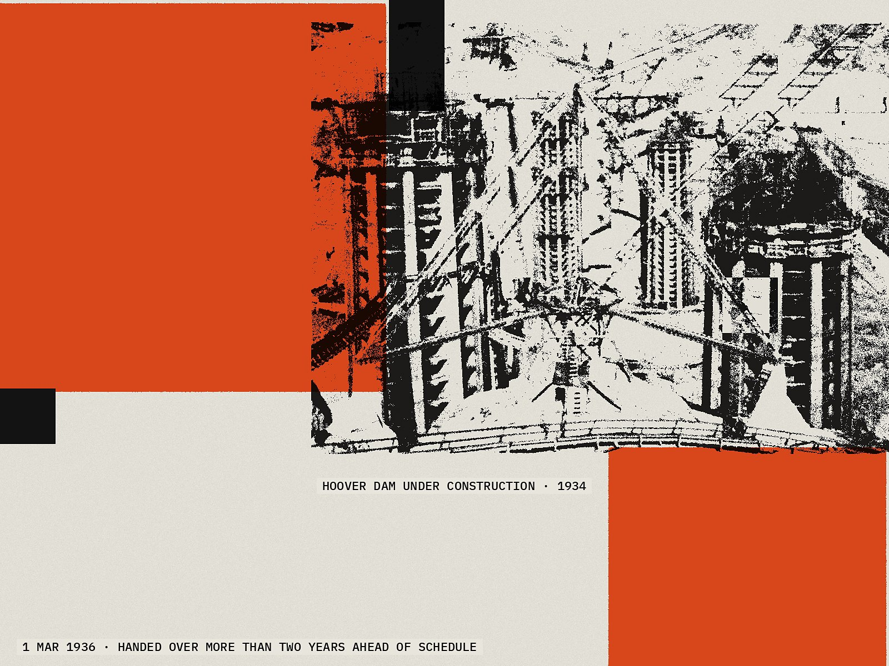

Movements
Transcendence
The vision of a future beyond human limits.

Transhumanism
Humans can and should use technology to overcome ageing, illness and the limits of body and mind. AI is the strongest tool yet for becoming more than human.

Singularitarianism
Technological change compounds. At some point machine intelligence surpasses ours, and history crosses a threshold beyond which it can no longer be predicted.
Includes successionism
Risk
The fear that AI could end us, and the work to prevent it.

Rationalism
A superintelligence built before alignment is solved would likely end humanity. Getting it right first is the most important problem there is.
Often called the doomers · includes the call to pause and Humanist AI

Effective altruism
Do the most good you can, counted across the whole future. For its longtermists, reducing the risk of extinction outweighs almost everything else.
Includes longtermism
Acceleration
The conviction that the answer is more technology, faster.

Effective accelerationism
Growth in energy, intelligence and capital is the direction of the universe. Technology should be accelerated, not slowed, and fear of it is the real danger.
Includes neoreaction and the network state

Techno-optimism
Technology and free markets are the engine of human progress. AI will make people richer, healthier and freer, and slowing it down costs lives.
Includes augmentation